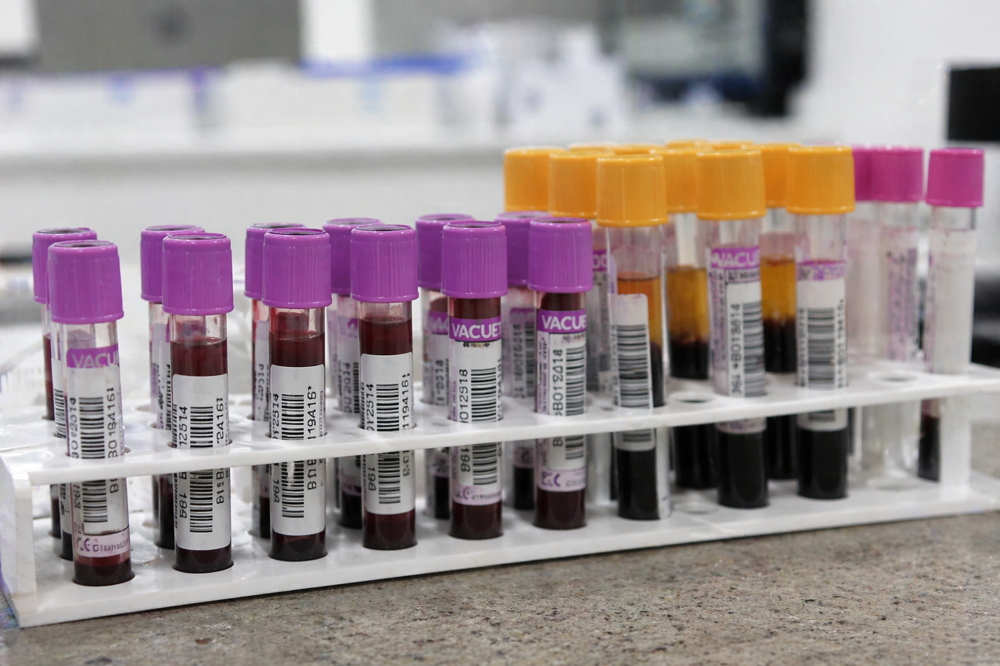

Bienvenido al Sistema CHOPPERLAB
Plataforma de gestion de laboratorio clinico. Permite registrar atenciones, buscar ordenes de examenes, visualizar resultados de pacientes y gestionar la impresion de documentos de manera centralizada.
Ingreso de Atencion
Busqueda de Ordenes
Catalogo de Servicios
Quienes Somos
Visor de Resultados
Check List
Resumen General
Contacto
Areas del Laboratorio
CHOPPERLAB gestiona examenes en las siguientes areas clinicas. Seleccione un modulo para acceder:
- Hematologia — coagulacion, hemograma, recuento diferencial
- Bioquimica Clinica — glucosa, perfil lipidico, enzimas hepaticas
- Microbiologia — cultivos, antibiograma, urocultivo
- Inmunologia — marcadores tumorales, autoinmunidad
- Hormonologia — perfil tiroideo, hormonas reproductivas
- Biologia Molecular — PCR, carga viral, secuenciacion